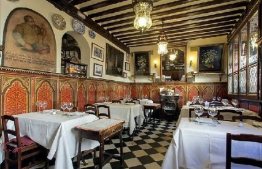

Historia del restaurante
Nuestro restaurante lleva el nombre Carnes Pérez en homenaje a José Carlos Pérez Martínez
por su heroica acción en 2001 de salvar a 12 personas tras el terremoto que devastó nuestro país,
dando su vida en el acto. Luego de su valiente acción, 2 de las familias de las personas que salvó
donaron dinero para lograr que la franquicia de carnes más exitosa de El Salvador se creara en su honor.
Foto actual de nuestras instalaciones
